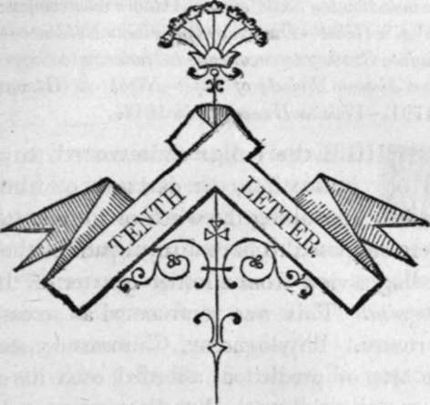

Tenth Letter
Description
This section is from the book "Letters On Demonology And Witchcraft", by Walter Scott. Also available from Amazon: Letters On Demonology & Witchcraft.
Tenth Letter
Other Mystic Arts independent of Witchcraft—Astrology—Its Influence during the 16th and 17th Centuries—Base Ignorance of those who practised it—Lilly's History of his Life and Times—Astrologers' Society—Dr. Lamb—Dr. Forman— Establishment of the Royal Society—Partridge—Connexion of Astrologers ic-ith Elementary Spirits—Dr. Dun—Irish Superstition of the Banshie—Similar Superstition in the Highlands —Brownie—Ghosts—Belief of Ancient Philosophers on that Subject—Enquiry into the respect due to such Tales in Modern Times—Evidence of a Ghost against a Murderer—Ghost of Sir George Villiers—Story of Earl St. Vincent—of a British General Officer—of an Apparition in France—of the Second Lord Lyttelton—of Bill Jones—of Jarvis Matcham—Trial of two Highlanders for the Murder of Sergeant Davis, discovered by a Ghost—Disturbances at Woodstock, anno 1649—Imposture called the Stockwell Ghost—Similar case in Scotland—Ghost appearing to an Exciseman—Story of a Disturbed House discovered by the firmness of the Proprietor—Apparition at Plymouth—A Club of Philosophers—Ghost Adventure of a Farmei—Trick upon a Veteran Soldier—Ghost Stories recommended by the Skill of the Authors who compose them— Mrs. Veal's Ghost—Dunton's Apparition Evidence—Effect of appropriate Scenery to encourage a tendency to Superstition-differs at distant Periods of Life—Night at Glammis Castle about 1791—Visit to Dunvegan in 1814.
WHILE the vulgar endeavoured to obtain a glance into the darkness of futurity by consulting the witch or fortune-teller, the great were supposed to have a royal path of their own, commanding a view from a loftier quarter of the same terra incognita. This was represented as accessible by several routes. Physiognomy, Chiromancy, and other fantastic arts of prediction, afforded each its mystical assistance and guidance. But the road most flattering to human vanity, while it was at the same time most seductive to human credulity, was that of Astrology, the queen of mystic sciences, who flattered those who confided in her, that the planets and stars in their spheres figure forth and influence the fate of the creatures of mortality, and that a sage acquainted with her lore could predict, with some approach to certainty, the events of any man's career, his chance of success in life or in marriage, his advance in favour of the great, or answer any other horary questions, as they were termed, which he might be anxious to propound, provided always he could supply the exact moment of his birth. This, in the sixteenth, and greater part of the seventeenth centuries, was all that was necessary to enable the astrologer to erect a scheme of the position of the heavenly bodies, which should disclose the life of the interrogator, or Native, as he was called, with all its changes, past, present, and to come.
Imagination was dazzled by a prospect so splendid ; and we find that, in the sixteenth century, the cultivation of this fantastic science was the serious object of men whose understandings and acquirements admit of no question. Bacon himself allowed the truth which might be found in a well-regulated astrology, making thus a distinction betwixt the art as commonly practised, and the manner in which it might, as he conceived, be made a proper use of. But a grave or sober use of this science, if even Bacon could have taught such moderation, would not have suited the temper of those who,, inflamed by hopes of temporal aggrandizement, pretended to understand and explain to others the language of the stars. Almost all the other paths of mystic knowledge led to poverty ; even the alchymist, though talking loud and high of the endless treasures his art was to produce, lived from day to day, and from year to year, upon hopes as unsubstantial as the smoke of his furnace. But the pursuits of the astrologer were such as called for instant remuneration. He became rich by the eager hopes and fond credulity of those who consulted him, and that artist lived by duping others instead of starving, like others, by duping himself. The wisest men have been cheated by the idea that some supernatural influence upheld and guided them ; and from the time of Wallenstein to that of Bonaparte, ambition and success have placed confidence in the species of fatalism inspired by a belief of the influence of their own star. Such being the case, the science was little pursued by those who, faithful in their remarks and reports, must soon have discovered its delusive vanity through the splendour of its professions ; and the place of such calm and disinterested pursuers of truth was occupied by a set of men sometimes ingenious, always forward and assuming, whose knowledge was imposition, whose responses were, like the oracles of yore, grounded on the desire of deceit; and who, if sometimes they were elevated into rank and fortune, were more frequently found classed with rogues and vagabonds. This was the more apt to be the case that a sufficient stock of impudence, and some knowledge by rote of the terms of art, were all the store of information necessary for establishing a conjurer. The natural consequence of the degraded character of the professors, was the degradation of the art itself. Lilly, who wrote the History of his Own Life and Times, notices in that curious volume the most distinguished persons of his day who made pretensions to astrology, and almost without exception describes them as profligate, worthless, sharking cheats, abandoned to vice, and imposing, by the grossest frauds, upon the silly fools who consulted them. From what we learn of his own history, Lilly himself, a lowborn ignorant man, with some gloomy shades of fanaticism in his temperament, was sufficiently fitted to dupe others, and perhaps cheated himself, merely by perusing, at an advanced period of life, some of the astrological tracts devised by men of less cunning, though perhaps more pretence to science, than he himself might boast. Yet the public still continued to swallow these gross impositions, though coming from such unworthy authority. The astrologers embraced different sides of the Civil "War, and the king on one side, with the Parliamentary leaders on the other, were both equally curious to know, and eager to believe, what Lilly, Wharton, or Gadbury, had discovered from the heavens, touching the fortune of the strife. Lilly was a prudent person, contriving with some address to shift the sails of his prophetic bark, so as to suit the current of the time, and the gale of fortune. No person could better discover from various omens the course of Charles's misfortunes—so soon as they had come to pass ! In the time of the Commonwealth, he foresaw the perpetual destruction of the monarchy, and in 1660, this did not prevent his fore seeing the restoration of King Charles II. He maintained some credit even among the better classes, for Aubrey and Ashmole both called themselves his friends, being persons extremely credulous doubtless respecting the mystic arts. Once a-year, too, the astrologers had a public dinner or feast, where the knaves were patronized by the company of such fools as claimed the title of Philomaths ; that is, lovers of the mathematics, by which name were still distinguished those who encouraged the pursuit of mystical prescience, the most opposite possible to exact science. Elias Ashmole, " the most honourable Esquire " to whom Lilly's Life is dedicated, seldom failed to attend ; nay, several men of sense and knowledge honoured this rendezvous. Congreve's picture of a man like Foresight, the dupe of astrology and its sister arts, was then common in society. But the astrologers of the 17th century did not confine themselves to the stars. There was no province of fraud which they did not practise ; they were scandalous as panders, and as quacks sold potions for the most unworthy purposes. For such reasons the common people detested the astrologers of the great, as cordially as they did the more vulgar witches of their own sphere.
Continue to: